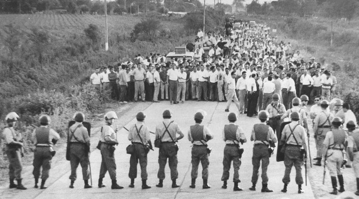

Planteo de tema de investigación
TEMA: “Tensiones y conflictos en torno a la organización de la mano de obra asalariada en la agroindustria azucarera tucumana hacia la gran huelga de 1923”.
La provincia de Tucumán apuntaló, desde la década del 60 del siglo XIX, una agroindustria azucarera apoyada en la existencia de estrechas relaciones que combinaban amistad con parentesco uniendo una parte de las élites económicas locales a los go-biernos de la Nación y la provincia. Como parte fundamental de la alianza, los gobier-nos protegían la industria azucarera a cambio de que la burguesía tucumana garantiza-ra la gobernabilidad de la región en el contexto de consolidación del Estado Nacional (Campi, 2020; Bravo et ál, 2015). Estas relaciones fueron el camino que permitieron lograr la apertura de una sucursal del Banco Nacional (1874), la extensión del Ferrocarril desde Córdoba a San Miguel (1876) y, durante los ´80s la protección aduanera. Estas medidas formaban un trinomio destinado a abaratar el costo logístico, unificar la moneda circulante y crear un cerco exclusividad del azúcar tucumano en el mercado nacional.
Por otro lado, se implementó una estricta regulación tendiente a asegurar y abaratar la mano de obra. Para ello, en 1877 fue modificado el reglamento de Policía (Campi, 2020; Guy, 2008), reforzando las ya vigentes leyes de conchabo. Mientras, los gobiernos limítrofes y nacional enviaban los aborígenes solicitados para trabajar en la zafra. Creemos estos factores como clave explicativa de la organización obrera que llevó a la primera gran protesta azucarera en 1904. Ya en 1913 el advenimiento de la Unión Cívica Radical a la gobernación alteró la relación existente con las burguesías locales. En la historiografía tradicional la sanción de leyes de carácter social fue considerada como síntoma de la profundización en la disputa por los recursos entre el Estado y los industriales (Ulivarri, 2015). Pero, como inten-taremos demostrar en nuestro trabajo, estos conflictos generaron el intersticio por el cual los trabajadores hicieron oír sus demandas. En este sentido, la regulación de diferentes aspectos de la vida cotidiana no sólo atiende a la disputa de poder y recursos entre la clase gobernante y la burguesía azucarera, sino que dio respuesta a demandas específicas de la clase trabajadora tucumana. A nivel regional, las huelgas azucareras de 1923, que demandaba el cumplimiento de las leyes de salario mínimo y jornada laboral, no constituye un caso aislado. La resis-tencia cambia de tono si se la observa articulada en un escenario turbulento San Miguel (Teitelbaum, 2016) y en todo el país con sus picos en Patagonia (Borrero, 2009), Santa Fe-Chaco (Jasinski, 2006), Buenos Aires (Bilsky, 2011).